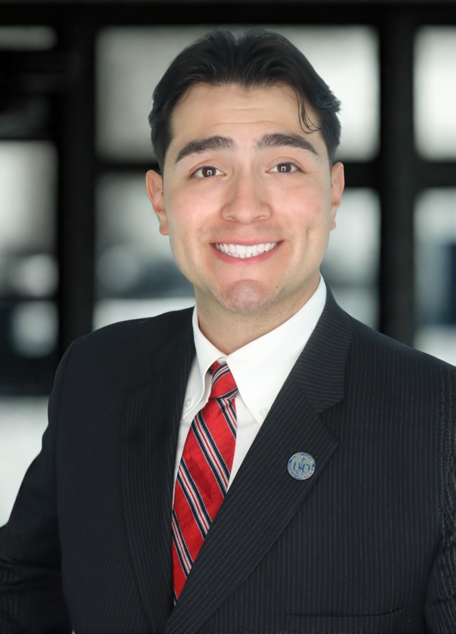

Embedded Systems
Arduino, Raspberry Pi, GPIO, sensors, serial communication, and project-based hardware control.
Electrical Engineering Portfolio
Electrical Engineering Student | U.S. Air Force Veteran | Defense Engineering Intern
Building technical depth in circuits, embedded systems, RF communication, hardware, and high-reliability engineering.

I am an Electrical Engineering student, U.S. Air Force veteran, and defense engineering intern focused on building practical engineering skills through hands-on projects, technical discipline, and continuous learning.
My interests include circuits, embedded systems, RF communication, hardware testing, and engineering systems that need to perform reliably in real-world conditions.
Arduino, Raspberry Pi, GPIO, sensors, serial communication, and project-based hardware control.
Learning wireless communication fundamentals through LoRa modules, serial testing, and field-style experiments.
Developing fundamentals in Ohm’s Law, PWM, resistors, circuit protection, measurements, and troubleshooting.
Applying a veteran background in discipline, safety, documentation, and technical accountability.
Completed
Developed a Python-based workflow to analyze underwater acoustic recordings across multiple test points. The project processed WAV files, generated spectrograms, compared relative signal quality, and produced visual reports to support engineering review.
Completed
Built and tested a LoRa communication range test setup using microcontrollers, REYAX LoRa modules, serial communication, PowerShell scripting, and Python-based data interpretation.
In Progress
Developing a communication testbed to explore how low-power sensor data from a digital potentiostat could be transmitted through LoRa for remote monitoring.
Upcoming
Selected to support the RoboSub STEM Ambassador Team, assisting with student robotics teams, technical support, STEM outreach, and presentation review.
Documenting Soon
Created a Raspberry Pi project using Python, GPIO, and camera input to detect motion and trigger video recording.
Completed
Designed and tested a basic LED control circuit using Arduino GPIO, resistors, and pulse-width modulation.
Supporting engineering projects in a high-reliability technical environment.
Former Nuclear Weapons Technician with experience in troubleshooting, technical discipline, safety, and high-reliability systems.
Vice President, supporting student veterans through leadership, networking, and campus engagement.
Professional notes on engineering, leadership, school, career growth, and life outside the lab.
Preview
A future write-up on using Python to process underwater acoustic recordings, generate spectrograms, compare relative signal quality, and turn raw test data into useful engineering visuals.
Preview
A future write-up on field testing, wiring reliability, serial data collection, RSSI/SNR interpretation, and lessons learned from a real range test.
Preview
A future note on setting up a safe communication test before connecting real low-power sensing hardware.
Preview
A future reflection on supporting student robotics teams, technical outreach, engineering communication, and STEM mentorship.
Preview
A future post on documenting projects, building a personal website, and turning hands-on learning into a professional engineering portfolio.
To protect my personal contact information, my full resume is not posted publicly. Please submit a request below and I will follow up directly.
For professional inquiries, networking, internship opportunities, or resume requests, connect with me on LinkedIn or submit a resume request through the form above.